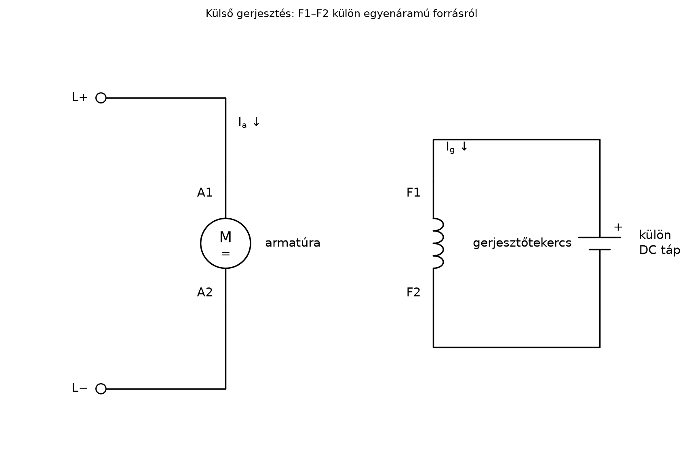
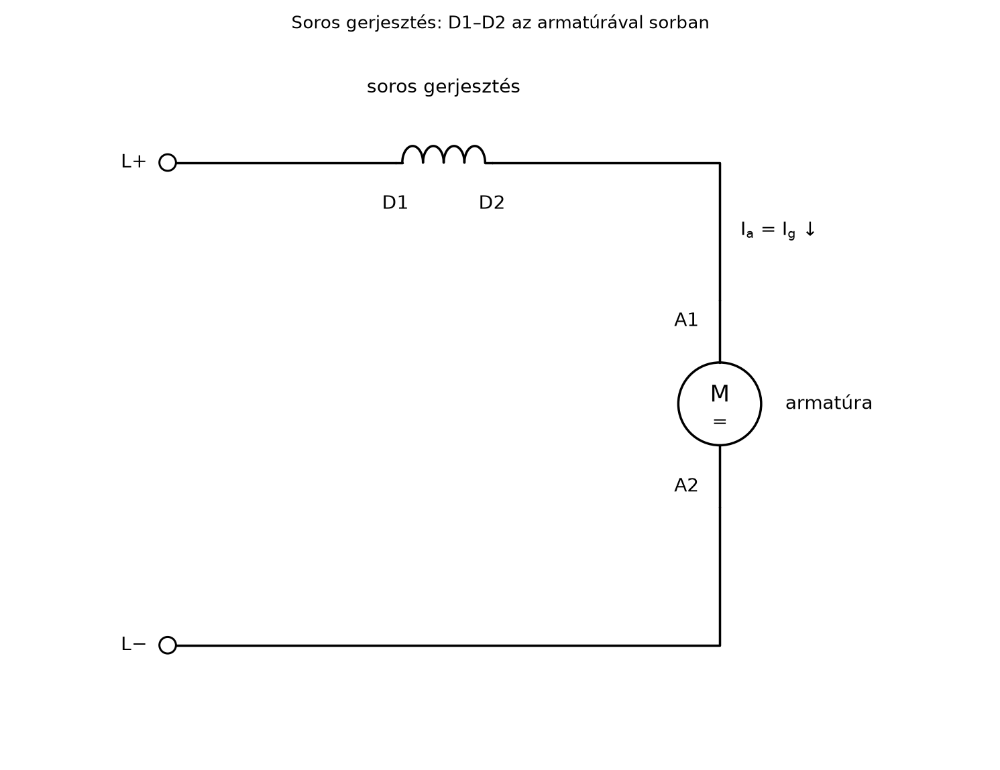
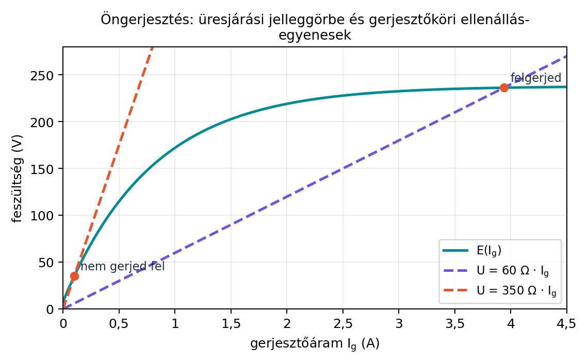
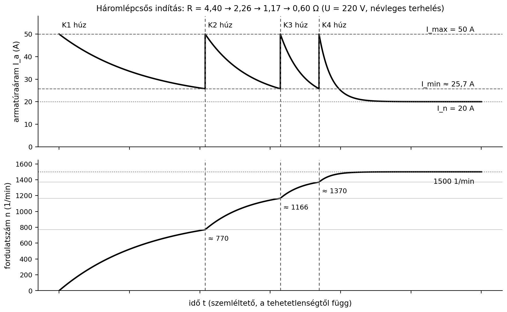
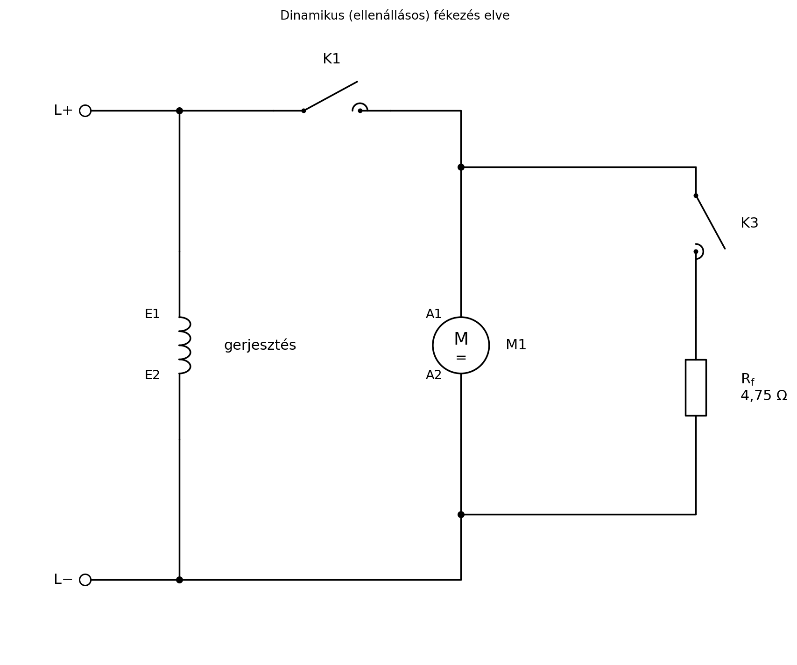
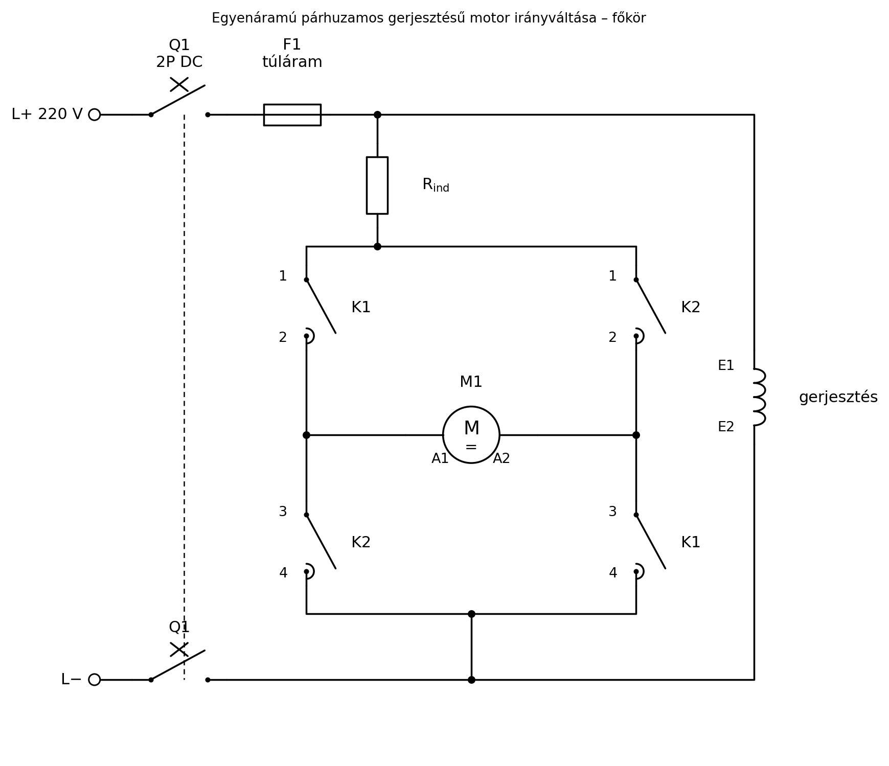
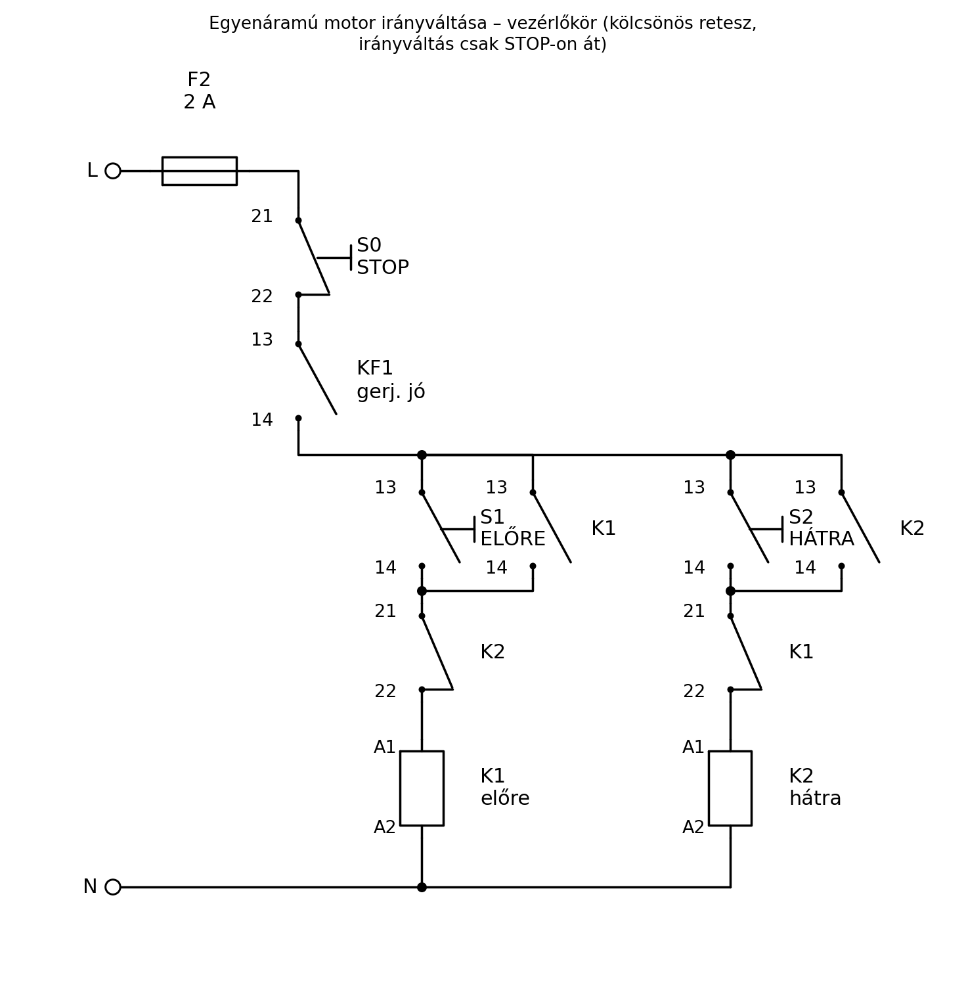
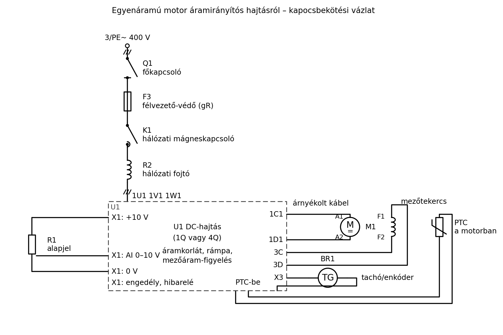

Amikor egy régi villástargonca nem indul, a szerelő először a keféket, a kommutátort és a gerjesztőtekercset ellenőrzi. Amikor egy régi szerszámgép egyenáramú hajtása terhelés hatására lelassul vagy éppen megszalad, a hiba oka gyakran a gerjesztés módjában, az indítóellenállásban vagy a kefeszerkezetben keresendő. Az egyenáramú gép ma már nem a legelterjedtebb hajtás, de az ipari környezetben, járművekben, felvonókban, darukban és régi szerszámgépekben még mindig találkozunk vele. Aki javítani vagy karbantartani akarja, annak pontosan kell értenie, hogyan jön létre a nyomaték, miért forog a gép, és hogyan lehet a fordulatszámot szabályozni.
Az egyenáramú gép forgórészében (armatúrájában) váltakozó irányú feszültség indukálódik, miközben a gép egyenárammal működik. A kommutátor (áramirányító, régi nevén kollektor) és a kefék együttese mechanikus egyenirányítóként dolgozik: a forgórész tekercseiben keletkező váltakozást úgy kapcsolja át, hogy a külső kapcsokon egyenirányú feszültség jelenjen meg generátoros üzemben, illetve a betáplált egyenáramot úgy váltogatja a forgórész tekercseire, hogy a nyomaték mindig azonos irányú legyen motoros üzemben.
A következő diagram a három leggyakoribb gerjesztési mód fordulatszám–nyomaték jellegét mutatja. A tényleges görbék a gép adataitól függenek, ezért az ábra csak a tipikus viselkedést szemlélteti.
Az ábrán látszik: a külső vagy párhuzamos gerjesztésű motor fordulatszáma alig változik a terheléssel („merev” jelleggörbe), a soros motor fordulatszáma erősen csökken növekvő nyomatéknál, a vegyes gerjesztés pedig átmeneti viselkedést mutat.
Definíció. Az egyenáramú gép olyan forgó villamos gép, amelynek forgórészében váltakozó irányú feszültség indukálódik, de a kommutátor és a kefék ezt a külső kapcsokon egyenirányúvá alakítják.
A gép fő részei:
A felsorolt részeket a következő ábra mutatja egy kétpólusú gépen. Az (a) keresztmetszeten a járom (1) belső oldalán ül a két főpólus (2) a gerjesztőtekercsekkel (3), közöttük a két keskenyebb segédpólus (4) a saját tekercsével (5); középen a hornyolt armatúra (6) az armatúratekercseléssel (7). A (b) oldalnézeten az armatúra mellett látszik a kommutátor (8), rajta a rugós kefetartókban (10) ülő szénkefék (9), amelyek az armatúrakört az A1 és A2 kapcsokra vezetik ki; a tengely két végén a csapágyak (11).
A kapocsdobozban az armatúrakör A1–A2, a párhuzamos gerjesztőtekercs E1–E2, a soros D1–D2, a külső gerjesztésű F1–F2 jelölést kap (ellenőrizendő: MSZ EN 60034-8 és a gyártói rajz). A HTML-kiadásban a két nézet külön nagyítható, a részek rámutatásra kiemelődnek.
Megjegyzés. A kommutátor és a kefék a gép legkényesebb, kopásnak kitett részei. A kefék cseréje, a kommutátor felületének tisztítása és a rugónyomás ellenőrzése rutin karbantartási feladat.
Közelről a következő ábra mutatja őket. Az (a) rész a kommutátor kerülete mentén vett metszet: a rézszeletek (1) között mikaszigetelés (2) van, amely kissé a réz felülete alatt marad (alámart), hogy a kefe ne ugráljon rajta. A (b) részen a szénkefét (3) a nyomórugó (4) szorítja a kommutátorhoz a kefetartóban (5); az áramot a hajlékony kefesodrat (6) vezeti a kapocshoz. A szaggatott vonal a kopáshatár: a (c) részen a kefe még a jel felett van, a (d) részen alá kopott, ilyenkor cserélni kell.
A kefét csak a gyártó által előírt minőségűre szabad cserélni, és csak feszültségmentes, leválasztott, álló gépen. A kommutátor egyenletes, sötét patinája a jó állapot jele; a beégett szeletek, a kiálló mika vagy az erős szikrázás javítást igényel. A HTML-kiadásban a négy panel külön nagyítható.
A gerjesztőtekercs táplálásának módja alapvetően meghatározza a motor fordulatszám–nyomaték viselkedését.
Szabály. A párhuzamos vagy külső gerjesztésű motor fordulatszáma közel állandó, mert a fluxus alig függ a terheléstől. A soros motor nagy indítónyomatékot ad, de üresjáratban a fluxus lecsökkenhet, és a fordulatszám veszélyesen megnőhet („megszaladás”).
A kapocsdobozban a gerjesztési módot a kapocsjelölés alapján ismered fel: armatúra A1–A2, külső gerjesztés F1–F2, párhuzamos gerjesztés E1–E2, soros gerjesztés D1–D2 (segédpólus: B1–B2; a jelölés ellenőrizendő: MSZ EN 60034-8 és a gép kapocstáblája). Az alábbi négy kapcsolási rajz ugyanazt az armatúrát (kör „M” és „=” jellel) mutatja a négy gerjesztési móddal; L+ és L− az egyenáramú tápfeszültség.




A rajzok összevetése: a külső gerjesztésnél a gerjesztőkör teljesen független; a párhuzamosnál a gerjesztőtekercs a kapocsfeszültségen van, árama nem függ a terheléstől (merev jelleggörbe); a sorosnál a teljes armatúraáram átfolyik a gerjesztőtekercsen (lágy jelleggörbe, megszaladhat); a vegyesnél mindkét tekercs megvan (átmeneti jelleg).
A következő ábra a négy mód fordulatszám–terhelés összefüggését egy tanulási modellből számolja az és az összefüggéssel (U = 220 V, = 20 A, = 0,6 Ω, = 1500 1/min; névleges nyomatéknál, kb. 26,5 N·m-nél mindhárom görbe 1440–1500 1/min körül van, a soros motor 2 N·m-nél viszont már kb. 4800 1/min-en járna). A HTML-kiadásban kiválaszthatod a gerjesztési módot, csúszkával állíthatod a terhelést, és párhuzamos gerjesztésnél kipróbálhatod a gerjesztésszakadást (megszaladás).
Törvény. A forgó egyenáramú gép armatúrájában indukált feszültség:
ahol az indukált feszültség (V), a pólusonkénti fluxus (Wb), a szögsebesség (rad/s), pedig a gép konstrukciójától függő állandó.
Törvény. Az elektromágneses nyomaték:
ahol az armatúraáram (A), a nyomaték (N·m).
A két képletben ugyanaz a állandó szerepel, ha konzisztens SI-egységeket használunk. Ez a következőképpen látható be: a mechanikai teljesítmény , a villamos teljesítmény, amely az indukált feszültségen átadódik, . Ideális esetben a kettő egyenlő, ezért
Mindkét oldalt -val osztva:
Összefüggés. Motoros üzemben a kapocsfeszültség a következő egyensúlyi egyenletet elégíti ki:
ahol az armatúrakör teljes ellenállása (armatúratekercs, kefék, esetleg soros gerjesztőtekercs ellenállása). Innen az indukált feszültség:
és a fordulatszám:
Ez a képlet a fő kiindulópontja a fordulatszám-szabályozásnak.
Generátorként a gépet hajtjuk, és az indukált feszültség táplálja a terhelést. Az áram ekkor a motoros iránnyal ellentétes, ezért a kapocsfeszültség az armatúraköri feszültségeséssel kisebb az indukált feszültségnél:
A párhuzamos gerjesztésű generátor saját magát gerjeszti (öngerjesztés, a régi „dinamó” elve; ma például tachogenerátoroknál, hegesztőgenerátoroknál, régi gépeknél találkozol vele). A forgó gépben a remanens (visszamaradó) mágnesség néhány volt feszültséget kelt, ez kis gerjesztőáramot hajt, az növeli a fluxust, az pedig a feszültséget – egészen addig, amíg a telítődés meg nem állítja a folyamatot. Az alábbi üresjárási jelleggörbe állandó fordulatszámon mutatja ezt; a gerjesztőkörre teljesül, ez az origón átmenő egyenes.

Az üzemi pont a görbe és az egyenes metszéspontja. A kezdeti szakasz meredeksége itt kb. ; ez a kritikus ellenállás nagyságrendje. Ha az egyenes ennél meredekebb, a feszültség a remanens érték közelében marad.
Az öngerjesztés három feltétele:
Ha a generátor nem gerjed fel, ellenőrizd ebben a sorrendben: forgásirány és fordulatszám → E1–E2 polaritása → a gerjesztőkör-szabályozó ellenállás állása és a kör folytonossága, kefék → a remanencia felfrissítése külső egyenárammal, kizárólag a gyártó utasítása szerint, jogosult személlyel. A váltakozó áramú generátor hasonló hibáját a Szinkron generátor és motor alfejezet gerjesztőköri útmutatója tárgyalja.
Feladat (B), megoldással. Egy generátor üresjárásban 220 V-ot ad, , a terhelőáram 30 A. Mekkora a kapocsfeszültség, ha a gerjesztés változását elhanyagolod? (öngerjesztett gépnél a valós érték még kisebb, mert a gerjesztőáram is csökken).
Indítás. Az egyenáramú motor indításakor a fordulatszám még nulla, így az indukált feszültség is nulla. Az indítási áramot csak az armatúrakör kis ellenállása korlátozza, ami veszélyesen nagy lehet. A kíméletes indítás módszerei:
Elv. Egyetlen indítóellenállással a gyorsulás végén az áram (és vele a nyomaték) túl kicsire esne, kiiktatásakor pedig nagyot ugrana. Ezért az ellenállást lépcsőkben iktatjuk ki: egy lépcsőn a gyorsulás alatt az áram -ról -re csökken; ekkor a következő fokozatot áthidaljuk, és az áram ismét -ra ugrik („fűrészfog”). Az átkapcsolás pillanatában a fordulatszám, így sem változik, ezért , vagyis
ahol a teljes köri ellenállás az indításkor, a lépcsők száma, és az utolsó lépcső után csak marad.

Figyeld meg az ábrán, hogy a lépcsők egyre rövidebbek: a nagyobb fordulatszámon a kisebb köri ellenállás miatt az áram gyorsabban csökken. Ugyanez az elv érvényes a csúszógyűrűs aszinkron motor rotorellenállásos indításánál is – lásd: Indítás: közvetlen, csillag–delta, lágyindító, csúszógyűrűs. Ellenőrző kérdés: mi történne, ha a KT1 időrelé túl rövid időre lenne állítva?
Fordulatszám-szabályozás. A képletből három alapvető szabályozási mód következik:
Szabvány. A forgó villamos gépek általános követelményeit az MSZ EN 60034 sorozat tartalmazza (ellenőrizendő: aktuális kiadás és az egyenáramú gépekre vonatkozó rész). A gépek adattábláján a gyártó megadja a névleges feszültséget, áramot, fordulatszámot és gerjesztési módot; a szerelőnek mindig ezeket az adatokat kell alapul vennie.
Daru-, felvonó- és targoncahajtásnál a megállítás ugyanolyan fontos, mint az indítás. Villamos fékezéskor a gép nyomatéka a forgással ellentétes irányú.
Dinamikus (ellenállásos) fékezés. A K1 leválasztja az armatúrát a tápról, a K3 pedig az fékellenállást köti az A1–A2 kapcsokra; a gerjesztés bent marad. A tovább forgó gép generátorként dolgozik, a mozgási energia az -ben hővé alakul (ezért melegszik a fékellenállás). A fékáram a fordulatszámmal arányosan csökken.

Visszatápláló (generátoros) fékezés. Ha a terhelés hajtja a gépet (lejtő, tehersüllyesztés) és , az áram iránya megfordul, az energia visszajut a forrásba. Ehhez visszatáplálásra képes forrás kell: négynegyedes áramirányító vagy akkumulátoros jármű hajtása.
Ellenáramú fékezés. Járás közben megcseréljük az armatúra polaritását: a táp és az indukált feszültség összeadódik, . Az áram nagyon nagy, ezért csak korlátozó ellenállással alkalmazható, és megálláskor le kell kapcsolni, különben a gép visszafelé indul. A példában 40 A-hez kellene.
| Mód | Az energia útja | Előny | Hátrány | Tipikus alkalmazás |
|---|---|---|---|---|
| dinamikus | fékellenállásban hő | egyszerű, hálózat nélkül is hat | álló gépnél nincs nyomaték | gyors leállítás, targonca, daru |
| visszatápláló | vissza a forrásba | takarékos | csak esetén, alkalmas forrással | süllyesztés, járművek |
| ellenáramú | ellenállásban hő (a tápból is) | erős, nullánál is hat | nagy áram, nagy veszteség | rövid, erős fékezés |
Biztonsági szabály. A dinamikus és a visszatápláló fék gerjesztés nélkül nem fékez: a gerjesztést a fékezés alatt fenn kell tartani és felügyelni. Ha a teher a hajtást visszahúzhatja, mechanikus tartófék is mindig szükséges.
Szabály. Az egyenáramú motor nyomatéka , ezért a forgásirányt az armatúraáram és a fluxus előjelének szorzata szabja meg. Az irány megfordításához vagy az armatúra (A1–A2), vagy a gerjesztőtekercs áramát kell megfordítani – a kettőt együtt nem, mert akkor a szorzat előjele nem változik. A gyakorlatban az armatúra áramát fordítjuk: a gerjesztőkör nagy induktivitású (átkapcsoláskor nagy önindukciós feszültség és ív keletkezik), és a fluxus átfordulása közben a gép rövid ideig gerjesztés nélkül maradna, ami megszaladási veszéllyel jár. Ha egy párhuzamos, soros vagy vegyes gerjesztésű motornál a táp polaritását cseréljük fel, az armatúra- és a gerjesztőáram is megfordul, ezért a motor ugyanarra forog tovább – ez a tipikus „megcseréltem a tápot, mégis ugyanarra forog” szerelési hiba. Ugyanezért forog a soros gerjesztésű és az univerzális motor váltakozó feszültségről is egy irányba (lásd: Univerzális, léptető, szervó és BLDC motorok).
| Gerjesztési mód | Mit fordítunk meg? | Kapocsátkötés |
|---|---|---|
| külső gerjesztésű | az armatúraáramot (vagy a külső gerjesztést) | A1–A2 csere, a gerjesztés változatlan |
| párhuzamos gerjesztésű | az armatúraáramot | A1–A2 csere, E1–E2 marad |
| soros gerjesztésű | az armatúra- vagy a soros tekercs áramát (csak az egyiket) | A1–A2 csere, D1–D2 marad |
| vegyes gerjesztésű | az armatúraáramot (a soros és a párhuzamos tekercs iránya együtt marad) | A1–A2 csere, D1–D2 és E1–E2 marad |
A párhuzamos gerjesztésű motor irányváltó főköre két mágneskapcsolóval az armatúra áramirányát fordítja; figyeld meg, hogy a gerjesztőtekercs a K1/K2 elé, közvetlenül a tápra kerül.

Kövesd végig az áramutat: K1 behúzásakor az áram L+ → R_ind → K1 → A1 → armatúra → A2 → K1 → L− úton folyik; K2 behúzásakor L+ → R_ind → K2 → A2 → armatúra → A1 → K2 → L−, vagyis az armatúrában ellenkező irányban. Az E1–E2 tekercs áramiránya mindkét esetben azonos. Ha K1 és K2 egyszerre húzna be, L+ és L− között az R_ind-en át rövidzár alakulna ki – ezért kell a kölcsönös retesz.
A vezérlőkör a háromfázisú irányváltóhoz hasonló: önfenntartás, kölcsönös villamos retesz, és az irányváltás csak STOP-on át lehetséges.

Miért csak STOP-on és leálláson át? Álló gépnél , az indítási áramot az indítóellenállás korlátozza. Ha viszont járás közben azonnal átkapcsolnánk, az armatúrában indukált feszültség (amely a forgásiránnyal együtt marad) a megfordított tápfeszültséggel összeadódik: az áramot hajtja („ellenáram”). Számpélda: , , -nél . Járás közbeni átkapcsoláskor
ami közel kétszerese az 50 A-es indítási korlátnak – és ez még akkor is így van, ha az indítóellenállás teljes egészében a körben van; kiiktatott indítóellenállásnál () az áram több száz amper lenne. Ezért kell a STOP-retesz (vagy egy időrelés várakozás, amely csak a gép megállása után engedi az ellenkező irányt). A KF1 gerjesztésfigyelő relé záró érintkezője biztosítja, hogy gerjesztés nélkül ne lehessen indítani (lásd a Tipikus hibák 4. pontját). Ellenőrző kérdés: melyik érintkező akadályozza meg, hogy S2 megnyomására K2 behúzzon, amíg K1 húz?
A ma is üzemelő egyenáramú hajtások (szerszámgép, extruder, daru, papíripari gépek) szinte mind áramirányítóról (tirisztoros vagy tranzisztoros/PWM DC-hajtásról) mennek; a szerelő ezeket köti be, cseréli és méri. Az alábbi kapocsbekötési vázlat egy jellemző külső gerjesztésű motor bekötését mutatja: a hálózati oldalon főkapcsoló, félvezető-védő biztosító, hálózati mágneskapcsoló és fojtó; a hajtás kimenetén az armatúra (A1–A2) és a mezőtáp (F1–F2); a vezérlőkapcsokon az alapjel-potméter, az engedélyezés, a tachogenerátor és a motor termisztora.

Kövesd végig a vázlatot a hálózattól a motorig, majd keresd meg a négy jelutat (alapjel, engedély, tachó, PTC). Ellenőrző kérdés: melyik kapocspárra kerül az armatúra, és melyikre a gerjesztőtekercs?
Üzembe helyezési ellenőrzőlista (feszültségmentesítés, majd a gyártói kézikönyv szerint):
A kapocsjelek, a beállítási paraméterek és a védelmi funkciók gyártófüggők (ellenőrizendő: gyártói kézikönyv).
Régi villamos mozdonyokban és villamosokban hosszú ideig soros gerjesztésű egyenáramú motorokat használtak. A soros motor előnye, hogy induláskor az áram nagy, ezért a fluxus is nagy, így a nyomaték már kis fordulatszámon is igen jelentős – éppen ez kell a szerelvény megindításához. A gyakorlatban azonban a soros motor üresjáratban való járatása tilos, mert a fluxus lecsökken, és a gép megugorhatja a megengedett fordulatszámot, ami a kommutátor és a tekercsek mechanikai sérüléséhez vezethet.
Biztonsági korlát. A beállítás és a mérés előtt a gépet a feszültségmentesítés öt szabálya szerint kell előkészíteni: leválasztás (az armatúra- és a gerjesztőkörben is), visszakapcsolás elleni biztosítás, a feszültségmentesség megállapítása, földelés és rövidre zárás ott, ahol előírt, a közeli feszültség alatti részek lefedése; meg kell várni a forgó részek teljes leállását. A gerjesztőtekercs induktív energiája miatt a DC-kör bontásakor ívveszély van. A munkát csak jogosult, képzett személy végezheti. A forgó gép tengelye, a kommutátor és a kefék sérülést okozhatnak.
Gyakorlás: ennek az alfejezetnek a kidolgozott példái, gyakorlatai és megoldással ellátott feladatai az Összefoglaló feladatgyűjtemény villanyszerelő tanulóknak című kötet 28.1 szakaszában találhatók.
Az egyenáramú gép szerkezetének alapja az állórészen elhelyezett gerjesztőtekercs, a forgórész armatúrája és a kommutátor-kefe rendszer. A kommutátor mechanikus egyenirányítóként teszi lehetővé, hogy a forgórészben indukált váltakozó feszültségből egyenáramú kimenet legyen, illetve motoros üzemben az egyenáramot a nyomaték fenntartása érdekében váltogassa. A gerjesztési módok – külső, párhuzamos, soros, vegyes – alapvetően meghatározzák a fordulatszám–nyomaték jelleget. A motor alapösszefüggései: (indukált feszültség) és (nyomaték). Motoros üzemben , így a fordulatszám . Indításkor az indukált feszültség nulla, ezért az indítási áram korlátozására indítóellenállást vagy szabályozott táplálást kell alkalmazni. A fordulatszám szabályozható az armatúrafeszültség, a fluxus vagy az armatúraköri ellenállás változtatásával. A soros motor nagy indítónyomatékú, de üresjáratban megszaladhat; a párhuzamos motor fordulatszáma merev, de a gerjesztőáram megszakadása veszélyes. Továbbvitt eredmény. A kommutátor, a kefék, a gerjesztési módok és az összefüggés alapvető a(z) Univerzális, léptető, szervó és BLDC motorok alfejezetben, ahol a kefe nélküli és kommutátoros kivitelek közötti különbségeket tárgyaljuk.
Az alfejezet fizikai és elektrotechnikai alapjai stabil ismeretek. A forgó villamos gépekre vonatkozó szabványoknál az MSZ EN 60034 sorozatot említettem, de annak pontos, az egyenáramú gépekre vonatkozó részeit, aktuális kiadását és a határértékeket a felhasználás előtt ellenőrizni kell. A példákban szereplő értékek és ellenállások szemléltető jellegűek, nem konkrét gyártói adatok; a valós gépek adatait mindig az adattábláról és a gyártói dokumentációból kell venni.